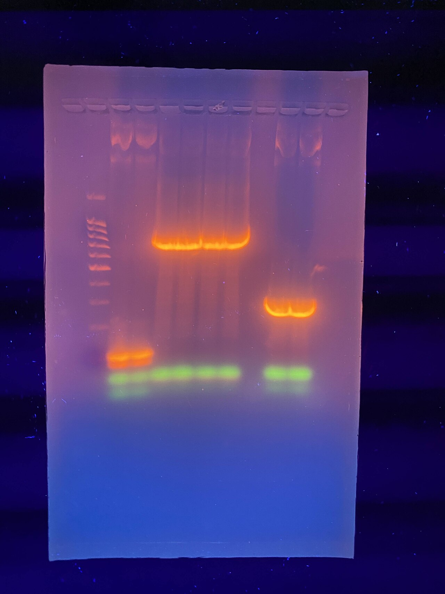
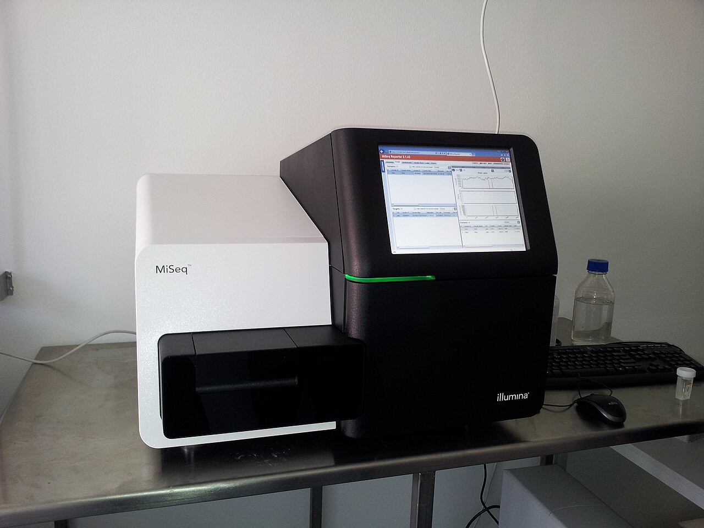
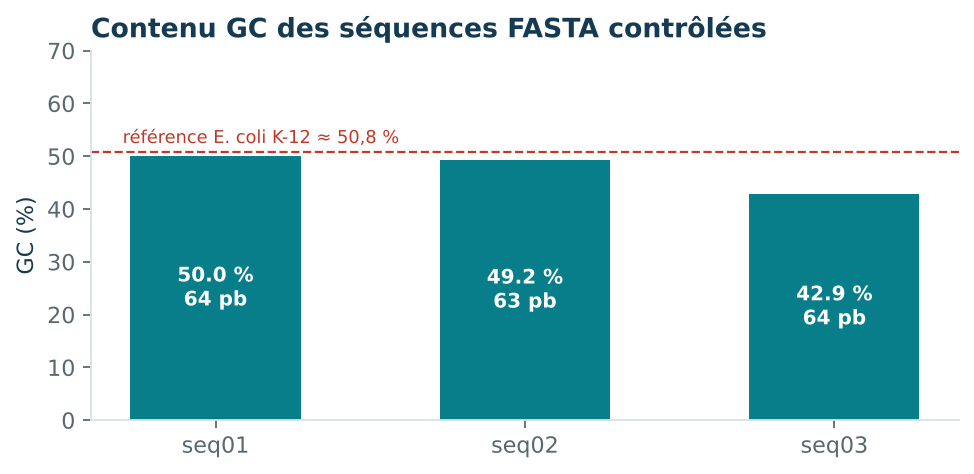
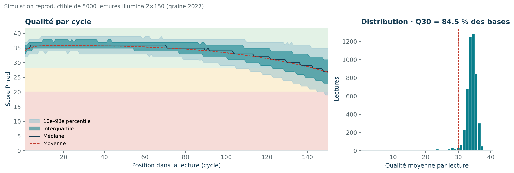

Contrôle qualité de séquences bactériennes
Transformer des séquences FASTA en indicateurs lisibles avant toute interprétation biologique.
Données synthétiques · contrôle exploratoireContexte et justification
Le contrôle qualité d’un séquençage inclut le format, la qualité des reads et les indicateurs de run fournis par l’automate. Cette démonstration ne contient que des séquences et reads synthétiques; aucun résultat d’automate réel n’est disponible.
Données, tableaux, graphiques, JSON et scripts sont affichés dans cette fiche; les liens de téléchargement sont réservés aux logiciels.
1. Problématique
Une séquence biologique ne peut pas être interprétée correctement si son format, sa longueur ou son contenu présentent des anomalies. Le contrôle qualité constitue donc une étape préalable à l’alignement, à l’annotation et à la comparaison de génomes. Il ne remplace pas une identification taxonomique : il vérifie que le matériau analysé est cohérent avec l’analyse envisagée.
2. Objectifs
- lire des séquences au format FASTA de manière reproductible ;
- calculer la longueur et la fraction GC de chaque séquence ;
- repérer les bases ambiguës ou les caractères inattendus ;
- fournir un indicateur d’ORF exploratoire sans le présenter comme une annotation ;
- documenter les limites de l’interprétation sur des séquences synthétiques.
3. Revue de lecture
Le format FASTA associe un identifiant précédé d’un signe « supérieur à » à une séquence composée de lettres nucléotidiques. Les contrôles de format sont essentiels car un espace, une lettre non autorisée ou une ligne mal concaténée peut modifier une longueur et fausser une composition. La fraction GC est un indicateur descriptif ; elle peut varier entre espèces et régions génomiques, mais elle ne suffit pas à identifier une bactérie.
La recherche de cadres ouverts de lecture (ORF) est également exploratoire. Un ORF candidat doit être confirmé par une annotation, un alignement, des bases de données et, lorsque cela est pertinent, des preuves expérimentales. La présence d’un ORF ne prouve ni l’expression d’un gène, ni la virulence, ni la résistance à un antibiotique.
4. De la saisie FASTA au contrôle qualité
FASTA est un format texte simple : une ligne d’identification commence par >, puis une ou plusieurs lignes contiennent la séquence. La première étape consiste à vérifier que chaque en-tête possède un identifiant unique et que les lignes de séquence sont correctement réunies. Les espaces, retours à la ligne et caractères invisibles sont retirés ; les lettres sont converties dans une casse homogène.
Le tri en amont sépare les entrées valides des entrées à revoir. Une séquence vide, un en-tête absent, un caractère hors alphabet ou une longueur inattendue est signalé plutôt que silencieusement corrigé. Cette décision conserve la traçabilité : le lecteur sait ce qui a été accepté, transformé ou exclu.
Pour chaque séquence retenue, on conserve l’identifiant original, la longueur avant et après normalisation, le nombre de bases ambiguës, la fraction GC et le statut du contrôle. Ces champs permettent de retrouver la séquence à l’origine d’un résultat et d’expliquer une anomalie.
5. Méthode
Lecture et normalisation
Les en-têtes et les séquences sont séparés, les retours à la ligne sont supprimés et les caractères sont uniformisés avant calcul.
Contrôles
La longueur, les bases ambiguës et les caractères hors alphabet attendu sont comptés pour chaque entrée.
Métriques
La composition GC est calculée sur les bases G et C rapportées à la longueur. L’indicateur ORF est présenté comme une exploration et non une annotation.
Traçabilité
Les métriques par séquence sont exportées dans un tableau CSV et un résumé JSON afin de faciliter la vérification.
Photographies réelles de laboratoire sous licence libre ; elles illustrent le contexte et ne correspondent pas aux données synthétiques.

Photo : YTEDG72.k, Wikimedia Commons, CC BY 4.0

Photo : Cirosantilli2, Wikimedia Commons, CC BY-SA 4.0


Photo : Konrad Förstner, Wikimedia Commons, CC0

Règles de contrôle et définition des métriques
- Format : chaque séquence doit suivre un en-tête FASTA non vide; les lignes sont concaténées et mises en majuscules. Les entrées mal formées sont rejetées plutôt que réparées silencieusement.
- Alphabet et bases ambiguës : A, C, G, T sont les bases non ambiguës; N est compté comme incertitude et les autres symboles sont signalés. Ce compte rend visible l’incertitude qui affecte la fraction GC et les interprétations aval.
- Longueur : compter les caractères de bases retenus, y compris N, pour détecter une entrée vide ou une longueur incohérente; la longueur seule ne mesure ni couverture ni complétude du génome.
- ORF : repérer ATG puis un codon stop en phase dans le cadre avant décrit par le script. La recherche n’évalue ni le brin inverse ni tous les cadres; ce n’est pas une annotation fonctionnelle.
- Interprétation : aucune qualité Phred, couverture, contamination, alignement ou référence génomique n’est fournie; aucune identification taxonomique ou conclusion clinique n’est permise.
- Fraction GC : calculer (G+C)/(A+C+G+T) pour décrire la composition parmi les bases appelables; les N sont exclus du dénominateur. Cette statistique peut repérer un profil atypique mais n’identifie pas une espèce et ne prouve pas une contamination.
6. Résultats
Le tableau public rassemble les métriques calculées pour chaque séquence. La lecture doit commencer par les contrôles de longueur et de caractères, puis se poursuivre par la composition GC. Une séquence contenant des ambiguïtés exige une interprétation plus prudente, car les métriques dépendant de l’alphabet peuvent être incomplètes.

tools/make_figures.py à partir de results/sequence_qc.csv.Contenu consultable ci-dessous le tableau de contrôle qualité — contenu présenté dans la fiche · Contenu consultable ci-dessous le résumé JSON — contenu présenté dans la fiche
7. Qualité de lectures FASTQ : démonstration séparée
FASTA conserve les bases mais pas leurs scores de qualité. Pour illustrer la qualité de lecture, le dépôt fournit donc un second jeu entièrement synthétique au format FASTQ, avec trois reads courts et des scores Phred+33. Cette partie ne modifie pas les métriques calculées sur le FASTA.
Règle de lecture : score Phred Q = −10 log10(probabilité d’erreur). Q20 correspond à une probabilité théorique d’erreur de 1 %; Q30 à 0,1 %. Ces scores sont des encodages de qualité, pas des garanties de justesse biologique. Le script contrôle les quatre lignes par read, l’accord longueur/qualité, l’encodage imprimable Phred+33 puis calcule longueur, GC, N, moyenne Phred, Q20 et Q30. Les métriques par cycle utilisent uniquement les reads couvrant le cycle.

tools/make_figures.py sur 5 000 lectures Illumina 2×150 simulées (graine fixe 2027) : plateau de qualité puis déclin en fin de lecture, comme sur un vrai run. Les trois lectures de démonstration restent détaillées dans les tableaux ci-dessous.Tableau synthétique par lecture
| Read | Longueur | GC % | Bases N | Phred moyen | Q20 | Q30 |
|---|---|---|---|---|---|---|
| DEMO_READ_01 | 20 | 55,0 | 0 | 40,0 | 100 % | 100 % |
| DEMO_READ_02 | 20 | 50,0 | 0 | 20,0 | 100 % | 0 % |
| DEMO_READ_03 | 20 | 40,0 | 4 | 40,0 | 100 % | 100 % |
Contenu consultable ci-dessous les métriques par lecture — contenu présenté dans la fiche · Contenu consultable ci-dessous les métriques par cycle — contenu présenté dans la fiche · Provenance et limites — contenu présenté dans la fiche
Limites FASTQ : n=3 reads artificiels, aucune calibration instrumentale, aucun adaptateur, contamination ou contrôle de couverture. Pour de vrais runs, employer un outil validé tel que FastQC/MultiQC, conserver les fichiers bruts et documenter le séquenceur et la librairie.
8. Interprétation et limites
Une variation de GC peut être utile pour comparer des séquences, mais elle ne constitue pas une preuve d’appartenance taxonomique. De même, un ORF détecté par une règle simple ne permet pas d’assigner une fonction. Les séquences étant synthétiques, aucun résultat ne doit être extrapolé à une souche clinique.
- absence de qualité de séquençage par position et de scores Phred ;
- pas d’alignement avec une base de référence ;
- pas d’annotation fonctionnelle ni de validation expérimentale ;
- petit nombre de séquences et absence de contexte d’échantillonnage.
8. Conclusion
Ce projet met en place une étape de contrôle simple mais indispensable. Avant d’interpréter une séquence bactérienne, il faut vérifier ce qui a réellement été lu, conserver les métriques et expliciter ce que chaque indicateur permet — ou ne permet pas — de conclure.
Données, sorties et code visibles
Entrée FASTA intégrale (synthétique)
>DEMO_SYNTHETIC_seq01|not_a_real_isolate
ATGGCTGCTTAAGCGCGCGCGCGCGCGCGCGCGCGCGCGATATATATATATATATATATATATA
>DEMO_SYNTHETIC_seq02|not_a_real_isolate
GCGCGCGCGCGCGCGCGCGCGCGCGCGCGCGATATATATATATATATATATATATATATATAT
>DEMO_SYNTHETIC_seq03|not_a_real_isolate
GCGCGCGCGCGCGCGCGCGCGCGCATATATATATATATATATATATATATATATATNNNNNNNN
Tableau QC FASTA
Afficher le tableau intégral · 3 lignes
| sequence_id | length_bp | gc_percent | ambiguous_bases | ambiguous_percent | longest_simple_orf_nt_forward_strand | contains_non_acgt |
|---|---|---|---|---|---|---|
| DEMO_SYNTHETIC_seq01|not_a_real_isolate | 64 | 50.0 | 0 | 0.0 | 12 | False |
| DEMO_SYNTHETIC_seq02|not_a_real_isolate | 63 | 49.206 | 0 | 0.0 | 0 | False |
| DEMO_SYNTHETIC_seq03|not_a_real_isolate | 64 | 42.857 | 8 | 12.5 | 0 | True |
Résumé JSON FASTA
{
"fasta_file": "DEMO_SYNTHETIC_sequences.fasta",
"n_sequences": 3,
"total_bp": 191,
"mean_length_bp": 63.67,
"mean_gc_percent": 47.354,
"total_ambiguous_bases": 8,
"note": "Synthetic exploratory QC only; not species identification, assembly validation or formal annotation."
}Contrôle synthétique par read FASTQ
Afficher le tableau intégral · 3 lignes
| read_id | length_bp | gc_percent | ambiguous_bases | mean_phred | q20_bases | q20_percent | q30_bases | q30_percent |
|---|---|---|---|---|---|---|---|---|
| DEMO_READ_01 | 20 | 55.0 | 0 | 40.0 | 20 | 100.0 | 20 | 100.0 |
| DEMO_READ_02 | 20 | 50.0 | 0 | 20.0 | 20 | 100.0 | 0 | 0.0 |
| DEMO_READ_03 | 20 | 40.0 | 4 | 40.0 | 20 | 100.0 | 20 | 100.0 |
QC synthétique par cycle
Afficher le tableau intégral · 20 lignes
| cycle | n_bases | mean_phred | q20_percent | q30_percent |
|---|---|---|---|---|
| 1 | 3 | 33.33 | 100.0 | 66.7 |
| 2 | 3 | 33.33 | 100.0 | 66.7 |
| 3 | 3 | 33.33 | 100.0 | 66.7 |
| 4 | 3 | 33.33 | 100.0 | 66.7 |
| 5 | 3 | 33.33 | 100.0 | 66.7 |
| 6 | 3 | 33.33 | 100.0 | 66.7 |
| 7 | 3 | 33.33 | 100.0 | 66.7 |
| 8 | 3 | 33.33 | 100.0 | 66.7 |
| 9 | 3 | 33.33 | 100.0 | 66.7 |
| 10 | 3 | 33.33 | 100.0 | 66.7 |
| 11 | 3 | 33.33 | 100.0 | 66.7 |
| 12 | 3 | 33.33 | 100.0 | 66.7 |
| 13 | 3 | 33.33 | 100.0 | 66.7 |
| 14 | 3 | 33.33 | 100.0 | 66.7 |
| 15 | 3 | 33.33 | 100.0 | 66.7 |
| 16 | 3 | 33.33 | 100.0 | 66.7 |
| 17 | 3 | 33.33 | 100.0 | 66.7 |
| 18 | 3 | 33.33 | 100.0 | 66.7 |
| 19 | 3 | 33.33 | 100.0 | 66.7 |
| 20 | 3 | 33.33 | 100.0 | 66.7 |
Résumé JSON FASTQ
{
"records": 3,
"bases": 60,
"encoding": "Phred+33",
"status": "synthetic training fixture; not sequencer output",
"limitations": "No adapter detection, instrument calibration, contamination screening, or biological inference."
}FASTQ intégral (synthétique)
@DEMO_READ_01
ACGTGCTAGCTAGGCTAACG
+
IIIIIIIIIIIIIIIIIIII
@DEMO_READ_02
GCTTACGATCGATCGTACGA
+
55555555555555555555
@DEMO_READ_03
NNACGTACGTACGTACGTNN
+
IIIIIIIIIIIIIIIIIIII
Contrôle de l’automate et justification des métriques
Pour un run réel, archiver run ID et version, rendement, reads pass/fail, Phred par cycle, bases ambiguës, démultiplexage, contrôles positifs/négatifs, couverture et contamination. La longueur mesure les bases lues, GC décrit leur composition, N signale une base non résolue; aucune seule métrique ne prouve l’identité ni la représentativité de la séquence. Aucun rapport d’automate réel n’étant fourni, ses valeurs ne sont pas inventées.
Script FASTA complet
Code complet · 120 lignes
#!/usr/bin/env python3
"""Rebuild Project 02 exploratory FASTA QC using only Python's standard library."""
from __future__ import annotations
import argparse
import csv
import html
import json
from pathlib import Path
ROOT = Path(__file__).resolve().parents[1]
VALID = set("ACGT")
DNA_IUPAC = set("ACGTRYSWKMBDHVN")
STOPS = {"TAA", "TAG", "TGA"}
def read_fasta(path: Path) -> list[tuple[str, str]]:
records: list[tuple[str, str]] = []
name: str | None = None
seq: list[str] = []
for line_no, raw in enumerate(path.read_text(encoding="utf-8-sig").splitlines(), 1):
line = raw.strip()
if not line:
continue
if line.startswith(">"):
if name is not None:
records.append((name, "".join(seq).upper()))
name, seq = line[1:].strip(), []
if not name:
raise ValueError(f"Empty FASTA header at line {line_no}")
elif name is None:
raise ValueError(f"Sequence found before a FASTA header at line {line_no}")
else:
seq.append("".join(line.split()))
if name is not None:
records.append((name, "".join(seq).upper()))
if not records or any(not sequence for _, sequence in records):
raise ValueError("FASTA must contain at least one non-empty sequence")
names = [name for name, _ in records]
if len(names) != len(set(names)):
raise ValueError("FASTA record headers must be unique")
for name, sequence in records:
invalid = sorted(set(sequence) - DNA_IUPAC)
if invalid:
raise ValueError(f"Invalid DNA symbol(s) in FASTA record {name!r}: {', '.join(invalid)}")
return records
def longest_simple_orf(sequence: str) -> int:
longest = 0
for frame in range(3):
start: int | None = None
for pos in range(frame, len(sequence) - 2, 3):
codon = sequence[pos:pos + 3]
if start is None and codon == "ATG":
start = pos
elif start is not None and codon in STOPS:
longest = max(longest, pos + 3 - start)
start = None
return longest
def render_svg(rows: list[dict[str, object]], mean_gc: float, total_bp: int, ambiguous: int, path: Path) -> None:
out = ['<svg xmlns="http://www.w3.org/2000/svg" viewBox="0 0 960 440" role="img" aria-labelledby="title desc">',
'<title id="title">Synthetic sequence quality-control overview</title>',
'<desc id="desc">Lengths, GC fraction, and ambiguous base counts for three synthetic sequences.</desc>',
'<rect width="100%" height="100%" fill="#f7fafc"/>',
'<text x="42" y="48" font-family="Arial" font-size="25" font-weight="700" fill="#173b52">Contrôle qualité des séquences</text>',
'<text x="42" y="78" font-family="Arial" font-size="14" fill="#587080">Démonstration synthétique · longueur en pb · contenu GC · bases ambiguës</text>']
for i, row in enumerate(rows):
y = 137 + i * 86
name = html.escape(f"séquence {i + 1:02d}")
length, gc, amb = int(row["length_bp"]), float(row["gc_percent"]), int(row["ambiguous_bases"])
out += [f'<text x="42" y="{y}" font-family="Arial" font-size="16" font-weight="700" fill="#173b52">{name}</text>',
f'<text x="42" y="{y + 24}" font-family="Arial" font-size="13" fill="#587080">{length} pb · {gc:.1f}% GC · {amb} base(s) ambiguë(s)</text>',
f'<rect x="350" y="{y - 17}" width="480" height="20" rx="10" fill="#e3edf1"/>',
f'<rect x="350" y="{y - 17}" width="{480 * gc / 100:.1f}" height="20" rx="10" fill="#0b8290"/>',
f'<text x="850" y="{y}" font-family="Arial" font-size="14" font-weight="700" fill="#173b52">{gc:.1f}% GC</text>',
f'<rect x="350" y="{y + 14}" width="{max(amb * 7, 4)}" height="8" rx="4" fill="{"#d18431" if amb else "#9ab7c0"}"/>']
out += [f'<text x="42" y="405" font-family="Arial" font-size="13" fill="#587080">Sommaire : {len(rows)} séquences · {total_bp} pb · {ambiguous} bases ambiguës · GC moyen {mean_gc:.3f}%</text>', '</svg>']
path.parent.mkdir(parents=True, exist_ok=True)
path.write_text("\n".join(out), encoding="utf-8")
def main() -> None:
parser = argparse.ArgumentParser(description=__doc__)
parser.add_argument("--input", type=Path, default=ROOT / "data" / "DEMO_SYNTHETIC_sequences.fasta")
parser.add_argument("--output-dir", type=Path, default=ROOT / "results")
args = parser.parse_args()
records = read_fasta(args.input)
rows = []
for name, sequence in records:
valid_count = sum(base in VALID for base in sequence)
gc_count = sum(base in {"G", "C"} for base in sequence)
ambiguous = len(sequence) - valid_count
rows.append({"sequence_id": name, "length_bp": len(sequence),
"gc_percent": round(gc_count * 100 / valid_count, 3) if valid_count else 0.0,
"ambiguous_bases": ambiguous, "ambiguous_percent": round(ambiguous * 100 / len(sequence), 3),
"longest_simple_orf_nt_forward_strand": longest_simple_orf(sequence),
"contains_non_acgt": str(ambiguous > 0)})
total_bp = sum(int(row["length_bp"]) for row in rows)
total_ambiguous = sum(int(row["ambiguous_bases"]) for row in rows)
mean_length = round(total_bp / len(rows), 2)
mean_gc = round(sum(float(row["gc_percent"]) for row in rows) / len(rows), 3)
args.output_dir.mkdir(parents=True, exist_ok=True)
headers = ["sequence_id", "length_bp", "gc_percent", "ambiguous_bases", "ambiguous_percent", "longest_simple_orf_nt_forward_strand", "contains_non_acgt"]
with (args.output_dir / "sequence_qc.csv").open("w", newline="", encoding="utf-8") as handle:
writer = csv.DictWriter(handle, fieldnames=headers)
writer.writeheader(); writer.writerows(rows)
summary = {"fasta_file": args.input.name, "n_sequences": len(rows), "total_bp": total_bp,
"mean_length_bp": mean_length, "mean_gc_percent": mean_gc,
"total_ambiguous_bases": total_ambiguous,
"note": "Synthetic exploratory QC only; not species identification, assembly validation or formal annotation."}
(args.output_dir / "sequence_qc_summary.json").write_text(json.dumps(summary, indent=2) + "\n", encoding="utf-8")
render_svg(rows, mean_gc, total_bp, total_ambiguous, args.output_dir / "sequence_qc_overview.svg")
print(f"Rebuilt QC for {len(rows)} sequences ({total_bp} bp; {total_ambiguous} ambiguous bases).")
if __name__ == "__main__":
main()Script FASTQ complet
Code complet · 45 lignes
#!/usr/bin/env python3
"""Summarize per-read and per-cycle Phred+33 metrics for a tiny synthetic FASTQ."""
import argparse
import csv
import json
from pathlib import Path
ROOT=Path(__file__).resolve().parents[1]
def parse(path):
lines=path.read_text(encoding='ascii').splitlines(); rec=[]
if len(lines)%4: raise ValueError('FASTQ must contain complete four-line records')
for i in range(0,len(lines),4):
h,s,p,q=lines[i:i+4]
if not h.startswith('@') or not p.startswith('+') or not s or len(s)!=len(q): raise ValueError(f'Invalid FASTQ record at line {i+1}')
if p[1:].strip() and p[1:].strip()!=h[1:].strip(): raise ValueError(f'FASTQ identifier mismatch at line {i+3}')
if any(base.upper() not in 'ACGTRYSWKMBDHVN' for base in s): raise ValueError(f'Invalid DNA symbol at line {i+2}')
if any(not 33<=ord(x)<=126 for x in q): raise ValueError('Quality chars outside Phred+33 printable range')
rec.append((h[1:],s.upper(),[ord(x)-33 for x in q]))
if not rec: raise ValueError('No FASTQ records')
return rec
def main():
ap=argparse.ArgumentParser(description=__doc__);ap.add_argument('--input',type=Path,default=ROOT/'data/DEMO_SYNTHETIC_reads.fastq');ap.add_argument('--output-dir',type=Path,default=ROOT/'results');a=ap.parse_args(); rec=parse(a.input)
out=[]
for name,seq,qs in rec:
n=len(seq); gc=sum(x in 'GC' for x in seq); q20=sum(x>=20 for x in qs);q30=sum(x>=30 for x in qs)
out.append({'read_id':name,'length_bp':n,'gc_percent':round(100*gc/n,1),'ambiguous_bases':sum(x not in 'ACGT' for x in seq),'mean_phred':round(sum(qs)/len(qs),2),'q20_bases':q20,'q20_percent':round(100*q20/n,1),'q30_bases':q30,'q30_percent':round(100*q30/n,1)})
maxlen=max(len(s) for _,s,_ in rec); cyc=[]
for pos in range(maxlen):
qs=[q[pos] for _,s,q in rec if pos<len(s)];cyc.append({'cycle':pos+1,'n_bases':len(qs),'mean_phred':round(sum(qs)/len(qs),2),'q20_percent':round(100*sum(x>=20 for x in qs)/len(qs),1),'q30_percent':round(100*sum(x>=30 for x in qs)/len(qs),1)})
a.output_dir.mkdir(parents=True,exist_ok=True)
for name,rows in [('fastq_read_qc.csv',out),('fastq_per_cycle_qc.csv',cyc)]:
with (a.output_dir/name).open('w',newline='',encoding='utf-8') as f:w=csv.DictWriter(f,fieldnames=list(rows[0]));w.writeheader();w.writerows(rows)
(a.output_dir/'fastq_qc_summary.json').write_text(json.dumps({'records':len(rec),'bases':sum(len(s) for _,s,_ in rec),'encoding':'Phred+33','status':'synthetic training fixture; not sequencer output','limitations':'No adapter detection, instrument calibration, contamination screening, or biological inference.'},indent=2)+'\n',encoding='utf-8')
width,height=860,390; outsvg=['<svg xmlns="http://www.w3.org/2000/svg" viewBox="0 0 860 390" role="img" aria-labelledby="t d"><title id="t">Synthetic FASTQ Phred quality by cycle</title><desc id="d">Mean Phred scores and Q30 percentage across 20 read positions in three synthetic reads.</desc><rect width="100%" height="100%" fill="#fff"/><text x="35" y="42" font-family="Arial" font-size="22" font-weight="bold" fill="#153b52">Qualité FASTQ synthétique · Phred+33</text><text x="35" y="68" font-family="Arial" font-size="13" fill="#59686e">Moyenne Phred par cycle · trois lectures de démonstration</text>']
x0,y0,pw,ph=58,100,750,220
for t in [0,10,20,30,40]:
y=y0+ph*(40-t)/40;outsvg += [f'<line x1="{x0}" y1="{y}" x2="{x0+pw}" y2="{y}" stroke="#d7e1e4"/>',f'<text x="{x0-10}" y="{y+4}" text-anchor="end" font-family="Arial" font-size="11" fill="#59686e">{t}</text>']
pts=[]
for r in cyc: pts.append(f"{x0+pw*(r['cycle']-1)/(maxlen-1):.1f},{y0+ph*(40-r['mean_phred'])/40:.1f}")
outsvg += [f'<polyline points="{" ".join(pts)}" fill="none" stroke="#087e8b" stroke-width="3"/>']
for r in cyc:
x=x0+pw*(r['cycle']-1)/(maxlen-1);y=y0+ph*(40-r['mean_phred'])/40;outsvg.append(f'<circle cx="{x:.1f}" cy="{y:.1f}" r="4" fill="#087e8b"/>')
outsvg += [f'<text x="{x0+pw/2}" y="358" text-anchor="middle" font-family="Arial" font-size="13" fill="#59686e">Cycle de base</text>','<text x="35" y="382" font-family="Arial" font-size="12" fill="#59686e">Q20/Q30 = fraction des bases avec score Phred ≥20/≥30; indicateurs de démonstration uniquement.</text>','</svg>']
(a.output_dir/'fastq_quality_by_cycle.svg').write_text('\n'.join(outsvg),encoding='utf-8')
print(f'FASTQ QC rebuilt: {len(rec)} synthetic reads, {sum(len(s) for _,s,_ in rec)} bases, {len(cyc)} cycles.')
if __name__=='__main__':main()Références récentes (2017–2023)
- Wick et al. Unicycler: bacterial genome assembly from short and long reads. PLOS Comput Biol. 2017. Source
- Chen et al. fastp: an ultra-fast all-in-one FASTQ preprocessor. Bioinformatics. 2018. Source
- Souvorov et al. SKESA: strategic k-mer extension for scrupulous assemblies. Genome Biology. 2018. Source
- Mikheenko et al. Versatile genome assembly evaluation with QUAST-LG. Bioinformatics. 2018. Source
- Bortolaia et al. ResFinder 4.0 for predictions of phenotypes from genotypes. J Antimicrob Chemother. 2020. Source
- Prjibelski et al. Using SPAdes de novo assembler. Current Protocols. 2020. Source
- Schwengers et al. Bakta: rapid and standardized annotation of bacterial genomes. Microbial Genomics. 2021. Source
- Feldgarden et al. AMRFinderPlus and the Reference Gene Catalog. Scientific Reports. 2021. Source
- Orakov et al. GUNC: detection of chimerism and contamination in prokaryotic genomes. Genome Biology. 2021. Source
- Chklovski et al. CheckM2: a rapid, scalable and accurate tool for assessing microbial genome quality. Nature Methods. 2023. Source
Données synthétiques publiées pour démontrer la méthode.